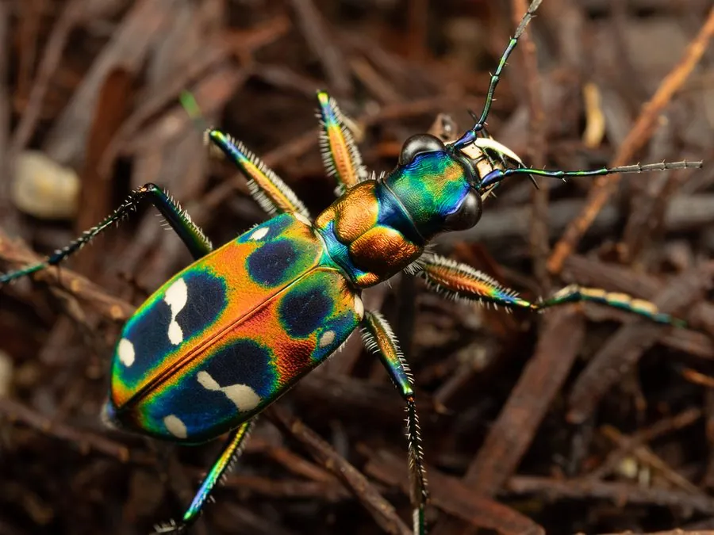

昆虫 · 动物界
中华虎甲 Cicindela chinensis

体色艳丽、行动敏捷的捕食性甲虫，鞘翅有金属光泽和白色斑纹，常在沙地和小路上快速奔跑捕食昆虫。
- 分类
- 门节肢动物门纲昆虫纲目鞘翅目科步甲科属虎甲属
- 栖息环境
- 沙地、土路、河滩、林缘和草地，幼虫在沙土洞中
- 地理分布
- 中国、日本和朝鲜半岛
- 保护级别
- 暂无评估
物种志
中华虎甲成虫体长约 1.5–2.5 cm，体色艳丽，鞘翅呈金属绿、蓝或红褐色，上面有不规则的乳白色斑纹，复眼大而突出，上颚发达呈锯齿状，足细长，善于奔跑。它是步甲科中的捕食性昆虫，幼虫也生活在土洞中捕食。
成虫常见于沙地、土路、河滩和林缘，行动敏捷，常短距离飞行后落地奔跑，捕食蚂蚁、苍蝇、蜘蛛等小型动物，被称为地面的小猎手。幼虫在沙土中挖洞，藏在洞口伏击经过的猎物。中华虎甲分布于中国、日本和朝鲜半岛，是常见的捕食性甲虫之一。它对环境变化较敏感，可作为草地和沙地生态的指示物种，在自然保护区里比较容易观察到。
形态与习性
- 食性捕食蚂蚁、苍蝇、蜘蛛等小型动物
- 体长约 1.5–2.5 cm
- 识别鞘翅有金属光泽和乳白色斑纹，复眼大
- 习性善于奔跑和短距离飞行，行动敏捷
- 分布中国、日本和朝鲜半岛
趣味知识
- 中华虎甲的鞘翅有金属光泽和白色斑纹，非常漂亮。
- 它跑得很快，常在地面上追捕蚂蚁和苍蝇。
- 虎甲幼虫住在沙土洞里，在洞口伏击路过的猎物。